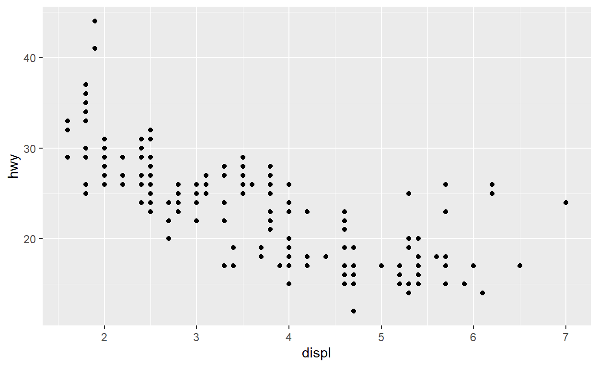
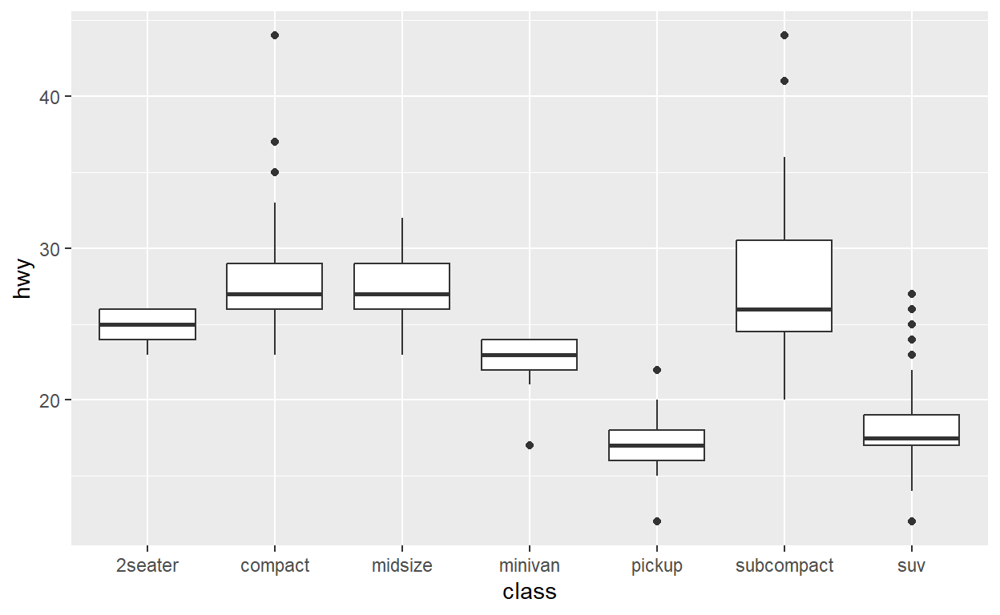
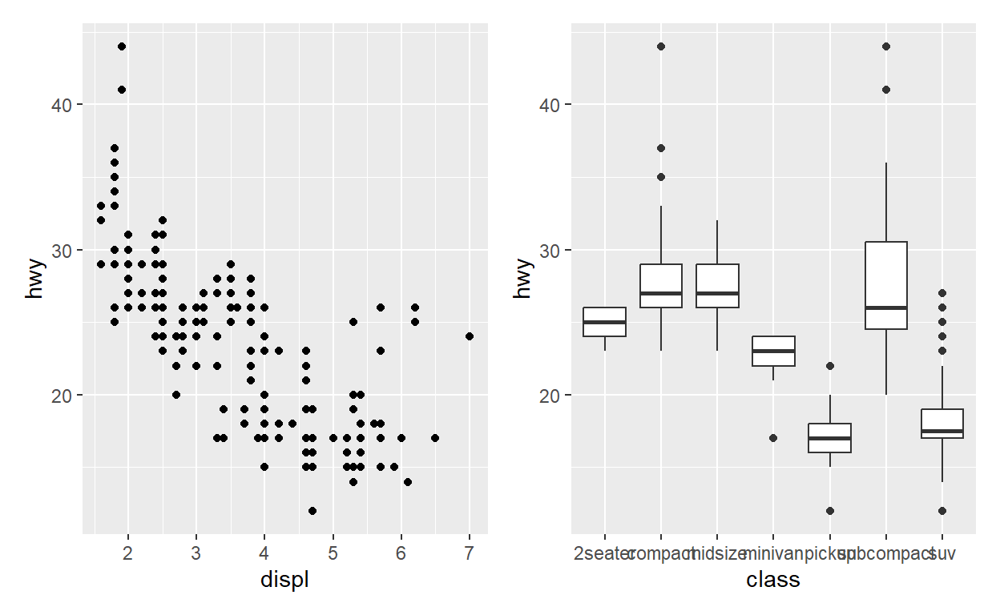
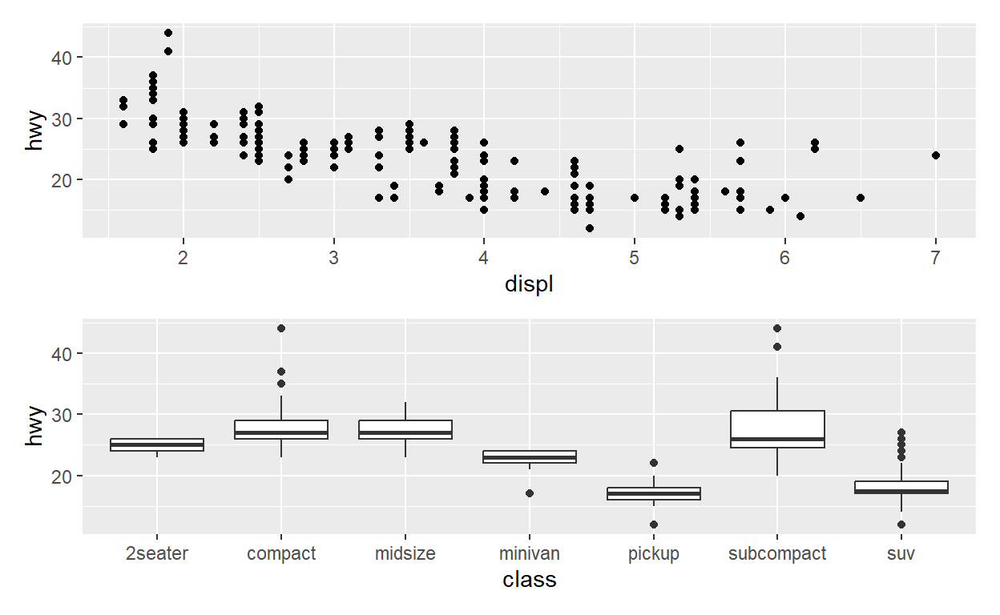
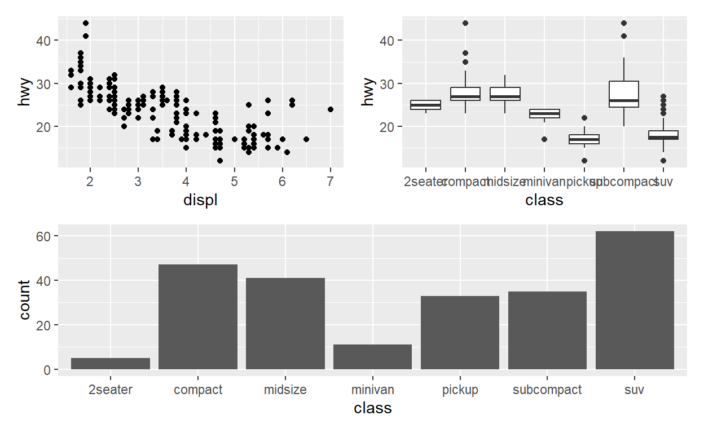

Chapter 44: Data Tables
What are Data Tables?
Data tables are a way to display data in a structured, tabular format. Data tables can be exploratory, helping you understand the data, or explanatory, displaying information in a table format to others.
When to Make a Table
Tables are effective when you want to display summary information about a dataset or when you want to display top results from an analysis.
# Let's use the `mpg` dataset from the `ggplot2` package for our examples
data(mpg)
head(mpg)What to Consider When Making A Table
When making a table, it’s important to consider the ordering, spacing, labels, significant digits, title or caption, and the source of the data.
Exercise 1: Making a Summary Table
Let’s create a summary table that displays the average cty and hwy mileage for each class of vehicle in the mpg dataset.
# Write your code herempg %>%
group_by(class) %>%
summarise(cty = mean(cty), hwy = mean(hwy)) %>%
kable()Exercise 2: Displaying Top Results
Let’s create a table that displays the top 5 classes of vehicles with
the highest average hwy mileage.
# Write your code herempg %>%
group_by(class) %>%
summarise(hwy = mean(hwy)) %>%
top_n(5, hwy) %>%
kable()Conclusion
Remember, when creating a table, keep in mind the ordering and spacing, labels, number of significant digits, title or caption, and the source of your data. Always ensure your tables are concise, clear, and easy to understand. In the next tutorial, we will go into more depth about data tables and explore some additional features and considerations. Happy coding!
Chapter 45: Tables in R
Introduction
In this tutorial, we will learn how to create informative tables in R
using the mpg dataset from the ggplot2
package. This dataset contains fuel economy data from 1999 to 2008 for
38 popular models of cars.
Getting started with the data
Let’s start by examining the mpg dataset. Our main
interest is to summarize the data based on the classes of vehicles.
library(ggplot2)
head(mpg)Exercise 1: Summarizing the Data
Let’s create a summary table for each class of vehicles. We want to calculate the number of vehicles (count), minimum highway mileage (min_hwy), average highway mileage (avg_hwy), and maximum highway mileage (max_hwy) for each class. Save the table to a variable called mpg_summary.
library(dplyr)
# Write your code herempg_summary <- mpg %>%
group_by(class) %>%
summarise(
count = n(),
min_hwy = min(hwy),
avg_hwy = mean(hwy),
max_hwy = max(hwy)
)Enhancing the Table Display
The default R output is functional but lacks aesthetic appeal. We can
enhance the table output using the kable() function from
the knitr package.
knitr::kable(mpg_summary)| class | count | min_hwy | avg_hwy | max_hwy |
|---|---|---|---|---|
| 2seater | 5 | 23 | 24.80000 | 26 |
| compact | 47 | 23 | 28.29787 | 44 |
| midsize | 41 | 23 | 27.29268 | 32 |
| minivan | 11 | 17 | 22.36364 | 24 |
| pickup | 33 | 12 | 16.87879 | 22 |
| subcompact | 35 | 20 | 28.14286 | 44 |
| suv | 62 | 12 | 18.12903 | 27 |
Exercise 2: Improving the Table
Now, let’s further improve the table by addressing the following issues:
- Rename column names to be more informative.
- Restrict the average highway mileage (avg_hwy) to 2 significant digits.
- Add a caption to the table.
- Shade alternate rows for better readability.
library(knitr)
library(kableExtra)
# Write your code herempg_summary %>%
rename(
"Vehicle Class" = class,
"Number of Vehicles" = count,
"Minimum Highway Mileage" = min_hwy,
"Average Highway Mileage" = avg_hwy,
"Maximum Highway Mileage" = max_hwy
) %>%
kable(digits = 2,
caption = "Table 1: Summary of Highway Mileage by Vehicle Class",
"html") %>%
kable_styling("striped")Conclusion
This tutorial introduced the basics of creating informative tables in R. Remember, the best way to learn is by practicing. So, feel free to play around with different functions and options to make your tables even better. Happy coding!
Chapter 46: Multiple Plots in R
Introduction
The patchwork package in R allows you to easily combine
multiple plots generated with ggplot2. This tutorial will
guide you through the process of creating, combining, and customizing
multiple plots. We’ll use the mpg dataset from the
ggplot2 package for this tutorial.
First, let’s load the required libraries and data.
library(ggplot2)
library(patchwork)
data(mpg)Creating Basic Plots
We’ll begin by creating two plots: a scatter plot of
displ vs. hwy, and a boxplot of
class vs. hwy.
p1 <- ggplot(mpg) + geom_point(aes(displ, hwy))
p2 <- ggplot(mpg) + geom_boxplot(aes(class, hwy, group = class))
p1
p2
Now, let’s combine these plots side by side using
patchwork.
p1 + p2
Customizing Layout
You can also arrange the plots vertically using plot_layout() and specifying the number of columns as 1.
p1 + p2 + plot_layout(ncol = 1)
Interactive Coding Exercise 1
Let’s now try to create another plot p3 that is a bar
plot of class and arrange it below p1 and
p2. Set the heights such that p1 and
p2 are twice as large as p3.
# Create the bar plot p3
# Arrange the plots# Create the bar plot p3
p3 <- ggplot(mpg) + geom_bar(aes(class))
# Arrange the plots
p1 + p2 + p3 + plot_layout(ncol = 1, heights = c(2, 2, 1))Additional Operators
You can also combine plots in more complex ways using additional
operators. The pipe (|) and slash (/)
operators arrange plots horizontally and vertically, respectively.
(p1 | p2) / p3
Interactive Coding Exercise 2
Let’s create a fourth plot p4 that is a histogram of
hwy. Then, arrange p1 and p2
horizontally on top of p3 and p4 arranged
vertically. Also, apply the theme_bw() to all plots.
# Create the histogram p4
p4 <- ggplot(mpg) + geom_histogram(aes(hwy))
# Arrange the plots and apply the theme
((p1 | p2) / (p3 | p4)) & theme_bw()# Create the histogram p4
p4 <- ggplot(mpg) + geom_histogram(aes(hwy))
# Arrange the plots and apply the theme
((p1 | p2) / (p3 | p4)) & theme_bw()Conclusion
In this tutorial, we learned how to use the patchwork
package to create and combine multiple ggplot2 plots. We
also learned how to customize the layout of combined plots and apply
themes to them. Keep practicing and experimenting with different
combinations of plots to get more comfortable with
patchwork!
Chapter 47: Advanced Data Visualization
In this tutorial, we will explore some advanced data visualization
techniques that can be implemented in R. Specifically, we will focus on
creating interactive and animated graphics using the plotly
package. Let’s dive in!
Interactive Graphics
So far, you’ve been creating static graphics in R. While they are excellent for conveying information, they lack the ability to react to user input. Interactive graphics, on the other hand, allow users to engage with the displayed data. For instance, an interactive graphic might let you hover over data points to display additional information or zoom into a specific part of the graph.
Animated Graphics
Animated graphics are another form of non-static visualization. Instead of responding to user input like interactive graphics, animated graphics display a sequence of static plots in a specific order, similar to a video. This type of graphic is useful when you want to illustrate changes over time.
Interactive Graphics with plotly
The plotly package provides tools for translating
ggplot2 graphs into interactive web-based versions. Let’s
see how we can use plotly to make our plots
interactive.
# Load the necessary packages
library(ggplot2)
library(plotly)# Create a ggplot2 object
p <- ggplot(mtcars, aes(x = factor(cyl), y = mpg)) +
geom_boxplot() +
geom_point()
# Convert the ggplot2 object to an interactive plot# Convert the ggplot2 object to an interactive plot
p <- ggplotly(p)
pplotly in RMarkdown reports
Plotly objects can be incorporated directly into RMarkdown reports as long as the .Rmd file is knitted into an HTML document. However, if a plotly object is knitted in a non-HTML format, it will be displayed as a .png screenshot of the graph.
Summary
In this tutorial, we’ve discussed how to generate interactive and
animated graphics in R using the plotly package. We hope
you now have a better understanding of how to use these advanced data
visualization techniques in your own work. Feel free to explore more
about plotly and other visualization packages in R!